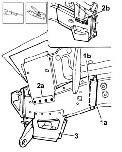
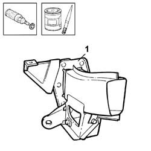
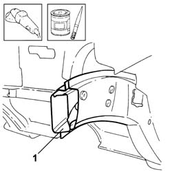
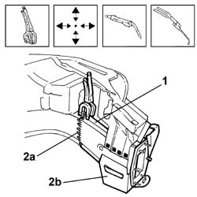

7210A45 FRONT SIDE PANEL (level 2)
- Path
- Procedures > 72 panels and frames > 7210 REMOVING REFITTING > 7210A structural elements (front part) > 7210A45 FRONT SIDE PANEL (level 2)
- Kind
- repair procedure (removal / refitting; the operation number is the code)
- Applies to
- all engines; all production periods
- Interactive page
- https://sloeber94.github.io/elrnDB-lThss/en/#/501022
Applies to: all engines; all production periods
Applies to: all engines; all production periods
 Removing
Removing
 Refitting
Refitting- Check whether the components connected are distorted through the bodyshell alignment measurements using suitable test equipment (test benches, templates or jigs).
- Carry out any bodyshell straightening operations before cutting the component.
1. Make the cuts (1a) and (1b) shown in the diagram using a power saw.
2. Remove the weld spots on the outside of the panel using a chamfering machine and a drill.
3. Detach the panel and remove it.

Applies to: all engines; all production periods
Refitting
Removing1. Remove the anti-corrosion treatment in the replacement part contact areas using a rotary brush and apply electro-galvanizing paint.

Applies to: all engines; all production periods
1. Remove the residues from the bodyshell using a disc grinder and apply electro-galvanizing paint.

Applies to: all engines; all production periods
1. Position and secure the panel using self-locking clamps and make sure that it is correctly positioned.
2. Weld in the cutting areas (2a) and in the areas (2b) in contact with the front wing mounting bracket.
3. Weld at points (3a) and (3b).

Applies to: all engines; all production periods
- Grind the welds using a disc grinder.
- Check that the welded component is correctly positioned.
- Apply electro-galvanzing paint to the ground parts.